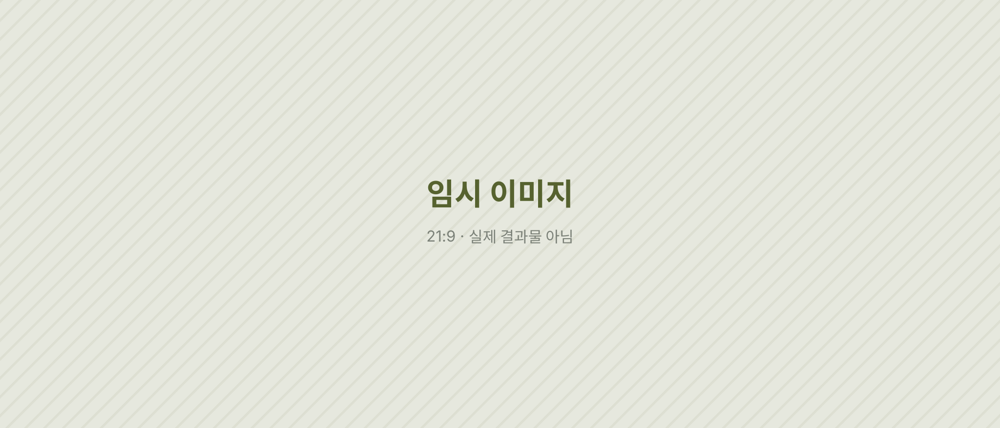

임시 시안 · 이 페이지의 글·이미지·영상은 레이아웃 확인용 더미입니다. 실제 원고와 결과물로 바뀔 예정입니다.
(3) · Saengmag · Interview / Press
아티스트 인터뷰와 페스티벌 취재
왜 인터뷰는 길고 무거워야 할까?
한 사람을 제대로 보여 주려면 긴 지면이 필요하다는 생각이 있다. 이 섹션은 롱폼 인터뷰 〈취중잡담〉, 숏폼 인터뷰 〈9문9답〉, 그리고 페스티벌 프레스 현장을 한 흐름으로 묶는다. (임시 도입문)
Situation들인 품과 돌아온 반응 사이
롱폼 인터뷰 '취중잡담'은 들인 품에 비해 반응이 따라오지 않았다.
이 문단에는 그 간극을 처음 알아챈 순간과, 당시 롱폼 인터뷰가 어떤 방식으로 만들어지고 있었는지가 들어간다. 섭외부터 발행까지의 과정을 짧게 적는다. (임시 원고)

Solution아홉 개의 질문, 그리고 현장
아홉 개의 질문으로 인물을 보여주는 숏폼 인터뷰 '9문9답'을 자체 기획했다. 최근에는 공개된 기록을 모아 편집자 관점의 인물 칼럼을 실험하고 있다.


이 문단에는 왜 하필 아홉 개의 질문이었는지, 질문을 고르는 기준과 순서를 어떻게 정했는지가 들어간다. (임시 원고)
페스티벌 프레스는 정기 프레스 참여 현장을 릴스로 옮기는 작업이었다. 아이폰으로 촬영하고 프리미어로 편집했다.
현장에서 무엇을 담고 무엇을 덜어 냈는지, 짧은 영상 안에서 아티스트와 관객을 어떻게 함께 보여 줬는지를 적는 문단이다. (임시 원고)
Result가벼워진 형식, 남은 사람
결과 단락에는 롱폼과 9문9답의 숫자 비교(저장, 공유, 롱폼 대비 배수), 그리고 무엇이 반응을 바꿨는지에 대한 해석이 들어간다. 확인한 값만 적는다.
실패와 도전을 크게 나누지 않는다. 숫자로 확인하고, 다음 콘텐츠에서 하나를 바꾼다.